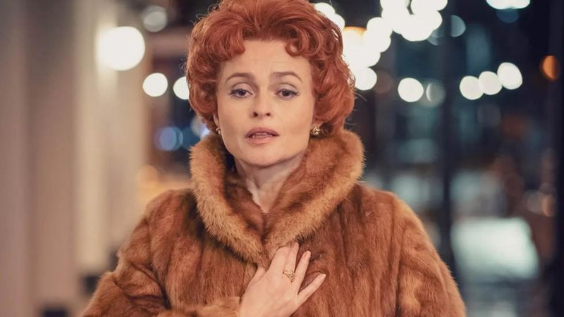
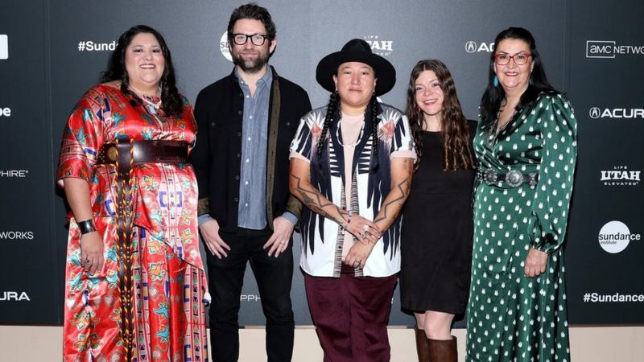
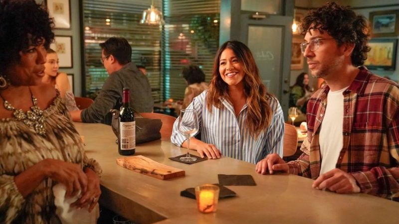
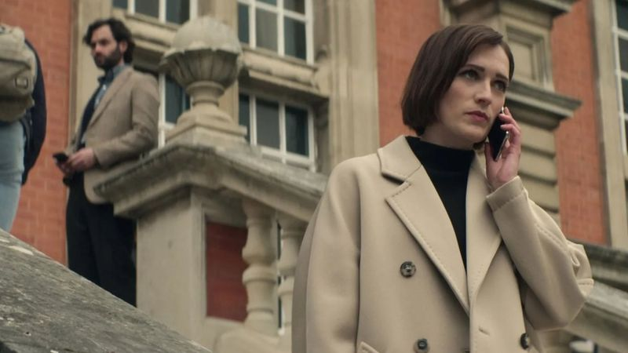

Nolly
Noel Gordon, known as Nolly, was the star of the soap opera Crossroads, but her career ended in 1981 when she was suddenly fired at the height of her popularity, much to the surprise of viewers.
Helena Bonham-Carter brings her back to life in Russell T. Davies' series. According to Davis, one of his first television jobs was writing a script - which was never used - for The Crossroads, and he wanted to tell the story of what happened behind the scenes of that series for 40 years.
- The star of the series "24" and the computer game The Last of Us has died
- What to watch in February: a selection of the best premieres
- 2023 movies worth watching
Hugh Grant successfully played disgraced politician Jeremy Thorpe in Davies' previous miniseries A Very English Scandal, so Bonham-Carter can expect similar success as Nolly.
Nolly premieres on February 2 on ITVX in the UK and later on PBS in the US.
Murder in Big Horn
Missing and murdered Native American women, whose disappearances are often glossed over as accidental, have been the focus of many dramas, including the 2017 film Wind River and the Hilary Swank ABC series Alaska Daily.
The documentary series "Big Horn Murder" examines several real-life murders in Montana through interviews with loved ones of the victims and perpetrators, including their families and local law enforcement.
The co-directors know the subject well. Razella Benali wrote the screenplay for AMC's excellent Native American drama Dark Winds, and Matthew Galkin directed the Showtime documentary Murder in the Bayou.
The series, which premiered at the Sundance Film Festival last month, gives the women it's about justice and attention that many of them never received in their lifetimes.
"Big Horn Murders" premieres February 3rd on Showtime.
Not Dead Yet
Sitcoms are at the peak of popularity lately, and among them is the story of a journalist played by Gina Rodriguez, who quit her career to fulfill her boyfriend's dream of opening a restaurant - as it turned out, only to be left alone and without a job ten years later.
She takes a job at a local newspaper in Pasadena, California as an obituary writer. What is the highlight here? She sees dead people, the ghosts of those she writes about, played by guest stars from comedies of the past, including Martin Mull and Rhea Perlman.
Rodriguez, who was loved by the audience for her role in "Jane the Virgin", has a chance for another bright role.
"Not Dead Yet" premieres on February 8 on ABC in the US.
You
Penn Badgley returns for the fourth season of the series about the most charming serial killer since Dexter.
After murdering his equally criminal wife and faking his own death, the man we know as Joe appears in London as a university professor named Jonathan Moore.
He is still, as in the third season, obsessed with Marian, while his new target will be the owner of the art gallery Kate, played by Charlotte Ricci.
"You" is one of Netflix's most successful series, and like many other hits, this season will consist of two parts, with a month off between them.
The premiere will take place on February 9 on Netflix.
African Queens: Njinga
Judi Pinkett Smith's company has released a new series that breaks with dramatized documentaries by telling the story of real-life African royalty.
The first season is about Nzinga, a 17th century warrior. This military and political leader fought against the Portuguese colonizers and ruled the lands of Ndongo and Matamba in the territory of modern Angola.
Netflix pretended to choose the time for this series. The success of films such as "The Woman King" and "Black Panther: Wakanda Forever" (Black Panther: Wakanda Forever) prepared the audience for new stories about African women who led their people.
African Queens: Nzinga premieres on Netflix on February 15